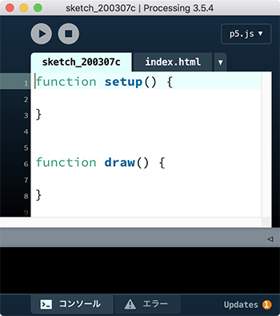

p5.js mode
p5.jsモードは、Processingの環境でp5.jsのプログラムを編集・実行する機能です。p5.jsはProcessingをJavaScirptにポート(移植)した言語で、 インタラクティブなモーショングラフィックスを、Processingと同じように簡単にJavaScriptとして書け、Webブラウザ上で実行することができます。Processingのプログラム(スケッチ)を、Processing環境とは独立して実行するには、[アプリケーションとしてエクスポート]機能を使えます。次の2つの方法が提供されています。
- (1)独立したアプリとして書き出す
- (2)Webページに埋め込まれた形としてhtmlファイルを用意
p5.jsモードと似ていますが、(2)はJava言語で書かれたProcessingのコードを、JavaScriptに変換して実行する(Processing.jsが変換する)のに対して、p5.jsではJavaScript言語を使ってスケッチを記述し、他のJavaScriptライブラリの機能を組み込める点が違います。Processingが提供する関数はその多くが共通していますが、使う言語がJavaではなく、JavaScriptになるため、文法が異なります。
p5.jsモードのスケッチ

Processingウィンドウの右上隅の下向き三角で、p5.jsを選択すると、図のような画面になります。
sketch_で始まるタブはJavaScriptのプログラムで、起動直後(新規作成時)は空のsetup()関数とdraw()関数が定義されています。
functionは、JavaScriptで関数を定義するキーワードです。Processingと同様、初期化処理はsetup()関数内に、繰返す処理はdraw()関数内に書きます。
スケッチには、JavaScript言語の文法に従い、p5.jsに定義された命令(関数と呼ぶ)を使って、描画処理のプログラムを記述します。
p5.jsの関数はメニューの[Help][Reference]から仕様の一覧を参照できます。 次のURLからもリファレンスを参照できます。 https://p5js.org/reference/
index.htmlのタブは、JavaScriptのプログラムをWebブラウザ上で実行するためのHTMLファイルで、[実行]ボタン(右向き三角)をクリックすると、Webブラウザが起動され、index.htmlファイルが表示されます。index.htmlには、次の２つの<script>タグが記述されており、JavaScriptのプログラムがページ上で実行されます。
<script language="javascript" type="text/javascript" src="libraries/p5.min.js">
</script>
<script language="javascript" type="text/javascript" src="sketch_200307c.js">
</script>
スケッチを保存すると、スケッチにつけた名前のフォルダが作成され、その中に拡張子jsのファイル、index.html、librariesフォルダ(p5.min.jsファイルが入る）ができます。
スケッチが正しく動作しない時は、WebブラウザのJavaScriptコンソールで、エラーに関する情報を得て、修正します。
Javaモードからp5.jsモードへの移植
Javaモードで作ったスケッチをp5.jsモードに書き換えるのに、最低必要なことを上げておきます。個々のスケッチで変更すべき点は異なりますが、次の(1)(2)(3)は必ず変更が必要です。- (1) size(幅, 高さ);をcreateCanvas(幅, 高さ);にする。
- (2) 変数の宣言を、データ型 変数名;から var 変数名;にする(あるいはlet 定数 = 値;)。
- (3) 関数の定義の先頭にfunctionをつけ、戻り値のデータ型(例えばvoid)を削除する。
- (4) p5.jsモードの関数名が、Processingと違うものがあるので、定義されていないとのエラー(関数名 is not defined)が出たら、リファレンスで確認(例えば、pushMatrix/popMatrixはpush/popになっている)。
- (5) 画像ファイルや音声ファイルは、dataフォルダにあることを前提にはしていないので、フォルダ名を含めてパス名を指定する。
- (6) クラスを定義していたら、JavaScirptでのキーワードclassを使ってのクラス定義に変更する。変更のポイントは次の通り
- ・コンストラクタの名前はconstructor
- ・メソッドの戻り値のデータ型は指定しない
- ・クラスのプロパティ(変数)はコンストラクタ内で初期値を設定して定義。this.名前で参照する(ex. this.x = 10;)
Processingのp5.jsモードでキーワードclassを使ってのクラス定義が機能しないことがある(原因不明)。その場合prototypeプロパティを使ってクラス定義する(p5.jsサンプルのSimulateセクションのex01_ParticleSystemを参照)。
次のページで、p5.jsモードでのスケッチの基本を説明します。